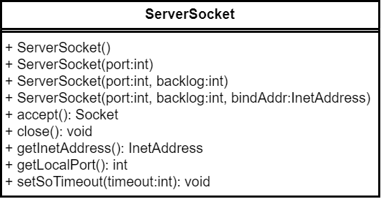

Java程序设计
第九章 网络编程
Java网络编程
- Java网络编程主要包括三层：
- 面向网络层：InetAddress
- 面向传输层：Socket(TCP), Datagram(UDP)
- 面向应用层：URL
InetAddress类
InetAddress类，是Java的IP地址的封装类

URL类
- URL:统一资源定位符，用于描述Internet上的各种资源的字符串，在各种www客户程序和服务器程序上，可利用URL以一种统一的格式描述各种信息资源
- URL的格式：protocol://host_name:port_number/file_name/reference
URLConnection类
- URLConnection是一个抽象类，代表应用程序与URL类之间的通信链接
- 其实例可用于读取和写入此URL所引用的资源，允许用POST, PUT和其它HTTP请求方法将数据送回服务器
- URL连接过程
- 创建一个URL对象
- 通过URL对象的openConnection创建URLConnection对象
- 配置参数和一般请求属性
- 读首部字段
- 获取输入流并读数据
- 获取输出流并写数据
- 关闭连接
TestURL.java--用于获取网站首页的内容
TestParamURL.java--提交请求到百度并返回搜索后的结果
Socket类
由伯克力大学首创，允许程序将网络连接视作一个流，可通过流的方式实现数据交换，主要有ServerSocekt和Socket


Socket实例
- 在客户端和服务器端分别创建Socket和ServerSocket对象
- 打开连接到Socket的输入/输出流
- 利用输入/输出流，按照一定的协议对Socket进行读写操作
- 关闭输入/输出流和Socket